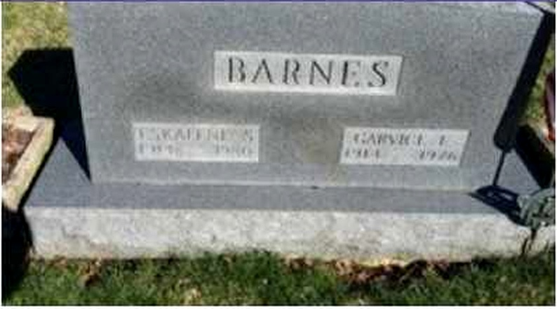
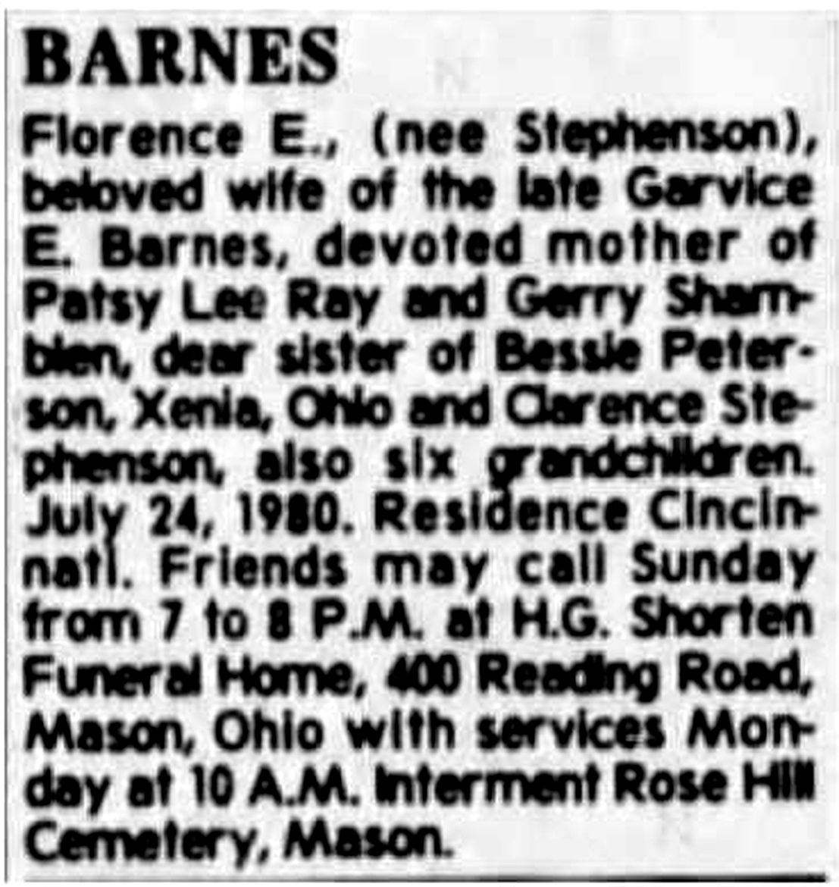

Garvice Euel Barnes
2 July 1914 – 3 May 1976
Quick Facts
Immediate Family
Parents
George Ozais Barnes (1886–1973) and Effie M. Miller Barnes (1891–1933). Garvice’s Find a Grave family links name both; a 2025 obituary clipping also names Effie Miller and George O. Barnes as his deceased parents. SUPPORTEDSpouse
Florence Eskalene Stephenson Barnes (1913–1980). Garvice’s contemporary 1976 funeral notice says “Florence (nee Stephenson)”; Florence’s memorial says wife of Garvice and lists daughters Patsy and Gerry; Patsy’s 2025 obituary names parents Garvice and Florence (nee Stephenson). DOCUMENTED BY CONTEMPORARY/FAMILY OBITUARIESChildren
- Patsy Lee Barnes — later Ray and Windisch. Her 2025 obituary says she was born in Cincinnati on 30 Nov. 1936 to Garvice and Florence (née Stephenson), and names sister Lois G. Shamblen. DOCUMENTED BY OBITUARY · Patsy’s obituary
- Lois Geraldine “Gerry” Barnes Shamblen (17 Mar. 1938–9 Mar. 2011). Garvice’s 1976 notice and Florence’s 1980 notice name daughter Lois/Gerry Shamblen; Find a Grave links her as their daughter. DOCUMENTED BY OBITUARIES
These are the two daughters identified in the reviewed contemporary notices, Find a Grave memorials and Patsy’s obituary; no additional children were found in this pass.
Siblings
- Nina Minnie Barnes Stretch (1909–2010). A 2010 obituary calls her the eldest of seven and lists her late siblings as Garvis, Harold, Christine, Lillian and Irene, and surviving brother Russell. DOCUMENTED BY OBITUARY
- Lillian Mae Barnes Fisher (1911–1988). Her obituary names brothers Russell and Harold and sisters Nina and Christine. DOCUMENTED BY OBITUARY
- Ruby Christine “Christine” Barnes Steinmann (1919–2001). Her memorial links her as a sibling; a contemporary obituary names Nina, Russell and Harold among survivors. SUPPORTED
- Marilyn Irene Barnes Vandenberg (1921–1979). Listed as a sibling in the family memorial cluster; the 1976 notice calls a sister “Irene Vandenburg,” a likely but not fully proven match. SUPPORTED; NAME VARIANT
- Russell Miller Barnes (1927–2023). His obituary-family memorial links him as Garvice’s brother; Nina’s obituary independently says he survived her. DOCUMENTED BY OBITUARY
- Harold Edward “Barney” Barnes (1930–2002). His memorial links him as a sibling; Nina and Lillian obituaries identify him as their brother. DOCUMENTED BY OBITUARIES
The 1976 funeral notice identifies four sisters and two brothers using the names Irene, Nina, Lillian, Christine, Russell and Harold. Later family memorials specify Ruby Christine and Marilyn Irene; the Irene/Marilyn identity remains a qualified name match. The seven-child family grouping is also consistent with Nina’s obituary describing herself as the eldest of seven.
On Family Tree Sites
Couple Folder
Life Timeline
2 July 1914
Born in Russell County, Kentucky. The exact town is not corroborated in the sources reviewed. SUPPORTED
1936
Daughter Patsy Lee Barnes born in Cincinnati (30 November), per her 2025 obituary. DOCUMENTED BY OBITUARY
17 March 1938
Daughter Lois “Gerry” Barnes born in Cincinnati, per her existing profile / Find a Grave; parents named in funeral notices. SUPPORTED
World War II
Served in the U.S. Navy; Find a Grave marker photo gives “SSM 3 US Navy / World War II.” SUPPORTED
3 May 1976
Died in Cincinnati after a long illness, per funeral notice. DOCUMENTED BY CONTEMPORARY NOTICE
5 May 1976
Interred at Rose Hill Cemetery, Mason, Ohio; Warren County index gives section, lot and burial date. SUPPORTED
Life Story
Garvice Euel Barnes was born on 2 July 1914 in Russell County, Kentucky. Find a Grave’s family links identify George Ozais Barnes and Effie M. Miller Barnes as his parents, and later obituary material names them directly. His own memorial marker records U.S. Navy World War II service. His exact town of birth remains unsettled: Bryan appears in the older Geni-derived profile, but the records checked here substantiate only Russell County.
Garvice’s wife was Florence Eskalene Stephenson. A contemporary 1976 funeral notice calls her “Florence (nee Stephenson) Barnes”; Florence’s own 1980 notice and daughter Patsy’s 2025 obituary likewise identify Garvice and Florence as the parents. A later clipping attached to his memorial instead calls the wife “Estelle Stevenson.” Because that single later clipping conflicts with the contemporary notice and two family obituaries, the profile preserves it as a discrepancy rather than changing the spouse assignment.
The couple had two daughters in the records reviewed: Patsy Lee Barnes, later Ray and Windisch, and Lois Geraldine “Gerry” Barnes Shamblen. Patsy’s obituary names both parents and her sister Lois; Garvice’s and Florence’s funeral notices independently mention both daughters.
Garvice died in Cincinnati on 3 May 1976 and was buried at Rose Hill Cemetery in Mason, Ohio. A contemporary funeral notice names six siblings. Nina Stretch’s obituary calls herself the eldest of seven and independently names the other siblings; Lillian Fisher’s and Ruby Steinmann’s obituaries add corroborating sibling relationships. The “Irene” in the funeral notice is likely Marilyn Irene Vandenberg, but the notice uses a different surname spelling and omits the full given name.
Photo Gallery




Sources and Evidence
- Find a Grave, Garvice Euell Barnes, memorial 46604086 — reports 2 July 1914 in Russell County, death 3 May 1976 in Cincinnati, Rose Hill Cemetery Section D2 Lot 79 Grave 6; links parents George Ozais Barnes and Effie M. Miller Barnes, wife Florence, six siblings and daughters Lois/Patsy. User-contributed memorial and attached materials; distinguish each original clipping/image from memorial family links. SUPPORTED
- “Garvice E. Barnes,” contemporary funeral notice clipping attached to Find a Grave, captioned Cincinnati Enquirer (Cincinnati, Ohio), 5 May 1976, p. 30 — says “beloved husband of Florence (nee Stephenson) Barnes,” names daughters Patsy Lee Ray and Lois (Gerry) Shamblin and siblings Irene Vandenburg, Nina Stretch, Lillian Fisher, Christine Steinmann, Russell and Harold Barnes; death 3 May 1976; Rose Hill Cemetery. Contemporary newspaper clipping, image transcribed from memorial. DOCUMENTED BY CONTEMPORARY NOTICE
- Patsy Lee Windisch obituary (2025), Newcomer/Legacy — says born 30 Nov. 1936 in Cincinnati to Garvice and Florence Barnes (née Stephenson); says her sister was Lois G. Shamblen. DOCUMENTED BY FAMILY OBITUARY
- Florence Eskalene Stephenson Barnes, Find a Grave 46604161 and attached 1980 obituary clipping — reports 9 Aug. 1913–25 July 1980, names Garvice E. Barnes as husband and daughters Patsy and Gerry/Lois; funeral clipping says “wife of the late Garvice E. Barnes.” SUPPORTED
- Warren County Genealogical Society, Mason Area Funeral Home Records, surname B — index row S&R5:255, “Barnes, Garvice Evell,” 1976. The index explains entries refer to original Shorten & Ryan funeral records; these are the next primary record to order/view. SUPPORTED INDEX
- George Ozais Barnes memorial 209316303 and Effie M. Miller Barnes memorial 209316879 — family links list Garvice among their children, and the markers give George 1886–1973 and Effie 1891–1933. User-contributed memorial evidence, consistent with the later parent-naming clipping. SUPPORTED
- 2025 Adair County, Kentucky News clipping attached to Garvice’s Find a Grave memorial — identifies the same Garvice as age 61, died 3 May 1976 in Cincinnati; says parents Effie Miller and George O. Barnes, occupation barber in Cincinnati/Covington, but calls his wife “Estelle Stevenson.” The spouse conflict is unresolved; do not use that name in the family assignment without another record. View clipping image. CONFLICTING SECONDARY CLIPPING
- Nina Minnie Barnes Stretch obituary, The Cincinnati Enquirer, 20 Apr. 2010, p. 16 — calls Nina the eldest of seven and names late siblings “Garvis,” Harold, Christine, Lillian and Irene, and surviving younger brother Russell. This independently supports the sibling group; “Irene” is a likely variant/reference to Marilyn Irene Vandenberg, not yet directly proven. DOCUMENTED BY OBITUARY
- Lillian Mae Barnes Fisher obituary, Anderson Herald-Bulletin, 25 Apr. 1988, p. A-2 — identifies her as a native of Bryan, Kentucky, and names surviving siblings Russell and Harold Barnes and Nina Stretch and Christine Steinmann. DOCUMENTED BY OBITUARY
- Ruby Christine Barnes Steinmann obituary, Tampa Bay Times, 9 Jan. 2001, p. 16 — names Nina Stretch and brothers Russell and Harold among survivors. DOCUMENTED BY OBITUARY
- Florence Find a Grave memorial 46604161 photo page, which credits the shared marker images and Florence’s clipping.
- Garvice Find a Grave memorial 46604086 photo page, which credits his 1976 and later obituary clippings.
Grades: DOCUMENTED an original or contemporary record says it · SUPPORTED several sources point to it · FAMILY ACCOUNT family testimony · UNPROVED a lead, not established.
Research Notes and Open Questions
- Obtain the original 1914 Kentucky birth record and 1930/1940/1950 census images to verify exact birthplace, parents, household and occupation. Do not overstate Bryan as place of birth: Find a Grave supports only Russell County; the prior Geni-derived town was not independently checked.
- Order/view Shorten & Ryan original funeral record S&R5:255 (Warren County Genealogical Society index) and the Cincinnati Enquirer funeral notice original page if available.
- Two obituary clippings conflict on his wife's given name: the contemporaneous 1976 Cincinnati notice says Florence (née Stephenson); a 2025 clip says Estelle Stevenson. Florence’s own 1980 notice and Patsy’s 2025 obituary independently support Florence. Keep Estelle as an unresolved conflicting transcription/identity lead only.
- The 2025 clipping reports parents Effie Miller and George O. Barnes, consistent with Find a Grave family links for Garvice, his parents and siblings. Locate original birth/census records before upgrading parentage beyond SUPPORTED.
- Garvice’s 1976 obituary calls a sister “Irene Vandenburg”; family memorials identify Marilyn Irene Barnes Vandenberg (1921–1979). This is likely but the name identity bridge is not explicit. “Christine Steinmann” matches Ruby Christine Barnes Steinmann in Find a Grave, though obituary transcript may use her given name only.
- Seven children in the George/Effie family are consistent across Find a Grave family links and Nina’s obituary (eldest of seven). The six siblings are named on this profile; original census/birth records are still needed to independently verify every link.
- Photo review: a grave marker is available and legibly names Garvice and Navy WWII service; no verified portrait located. A second attached marker image has inconsistent dates and is excluded. Keep the obituary clippings as documents, not portraits.
DNA
No DNA matches linked yet.
Family Notes
Have a record, correction, photo or story? Add it to the couple folder in Google Drive; new research notes belong in its Notes folder.
Profile rebuilt 20 November 2026 from the existing sparse entry, contemporary family obituaries, cemetery/funeral index and memorial images; relationships remain source-graded.